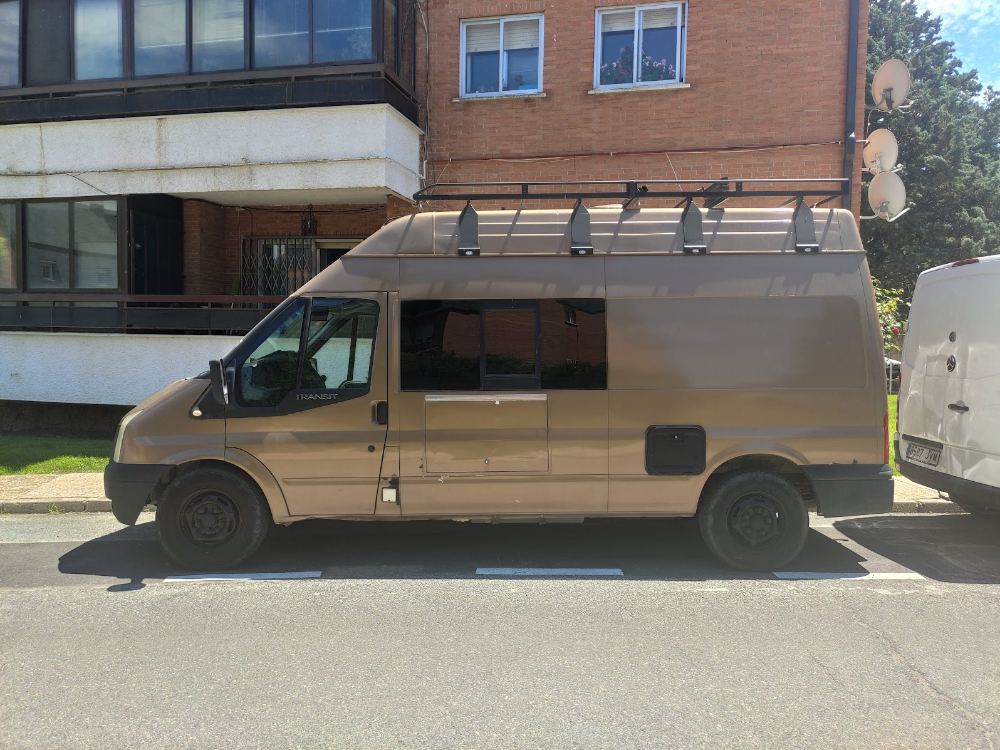
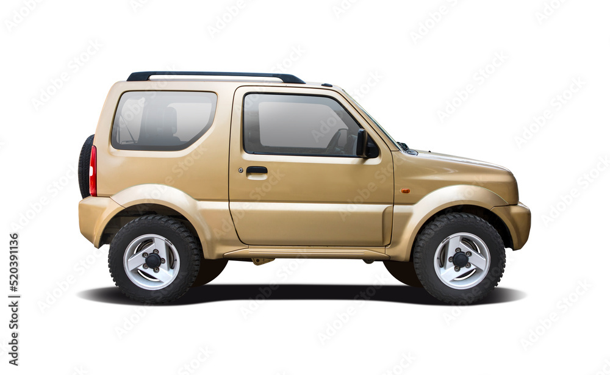
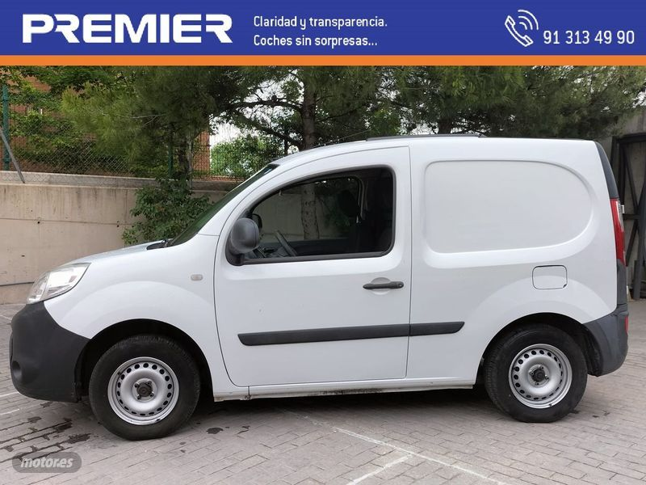
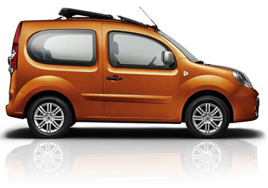
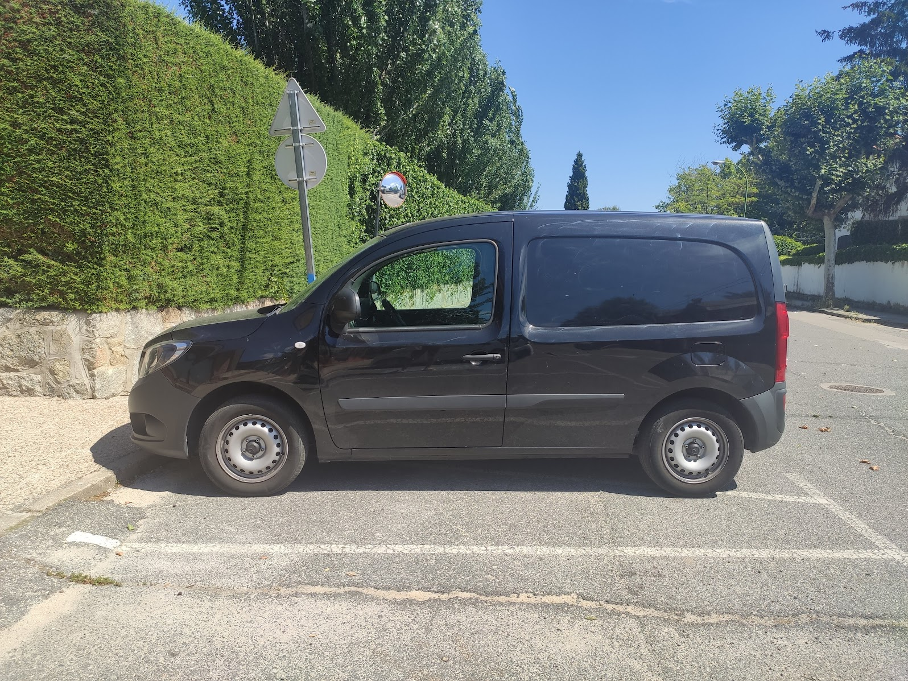
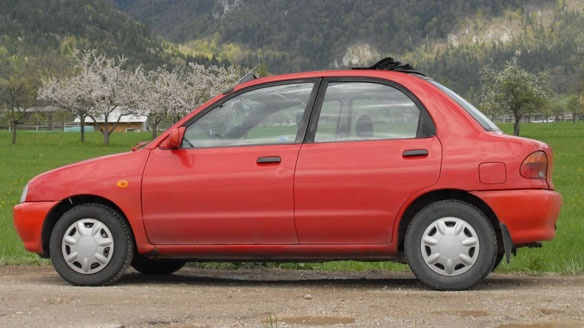
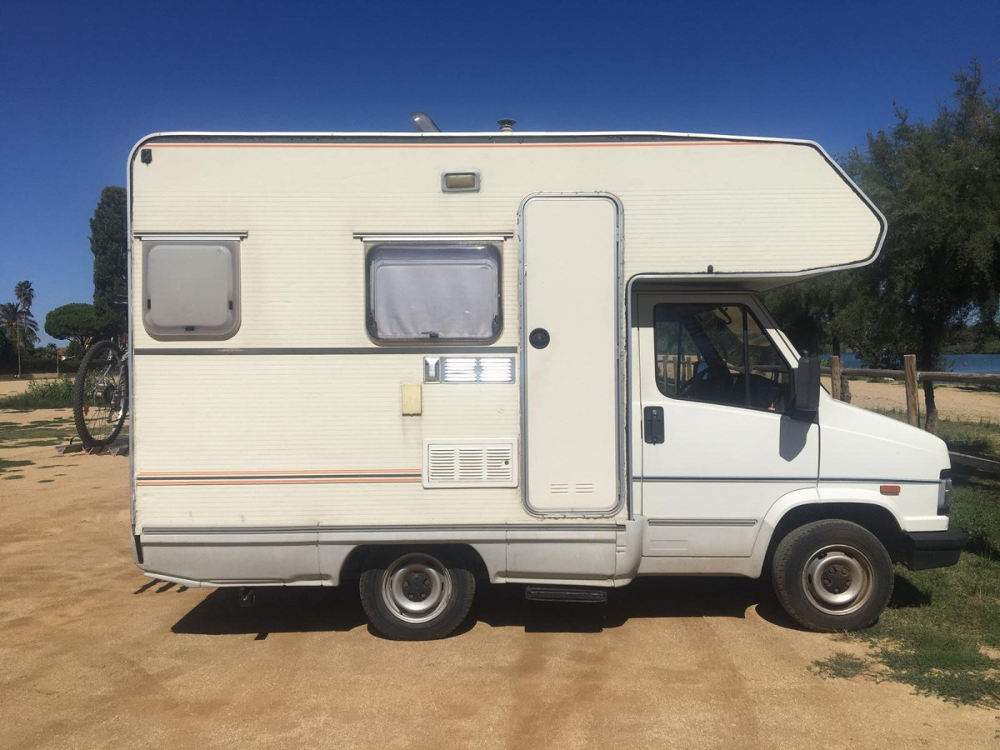
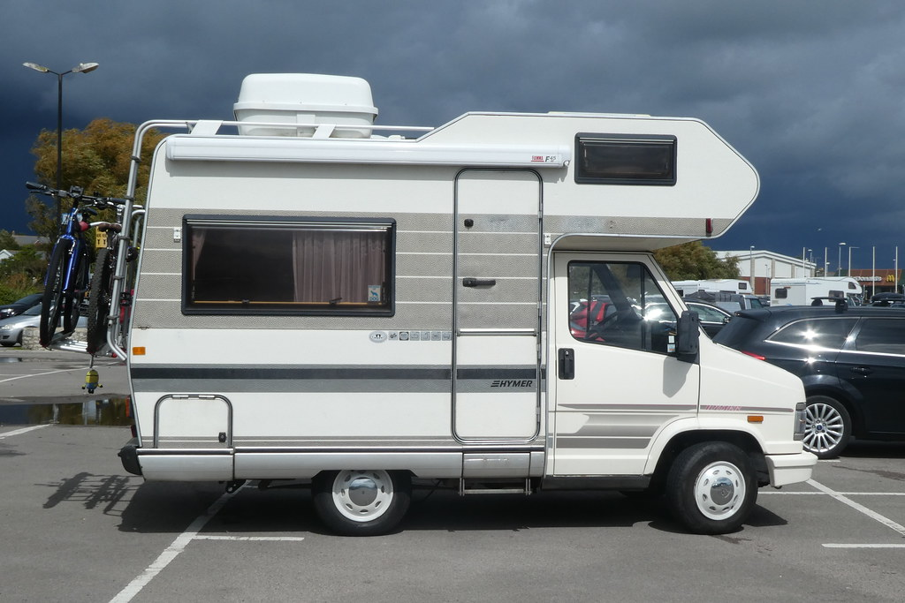
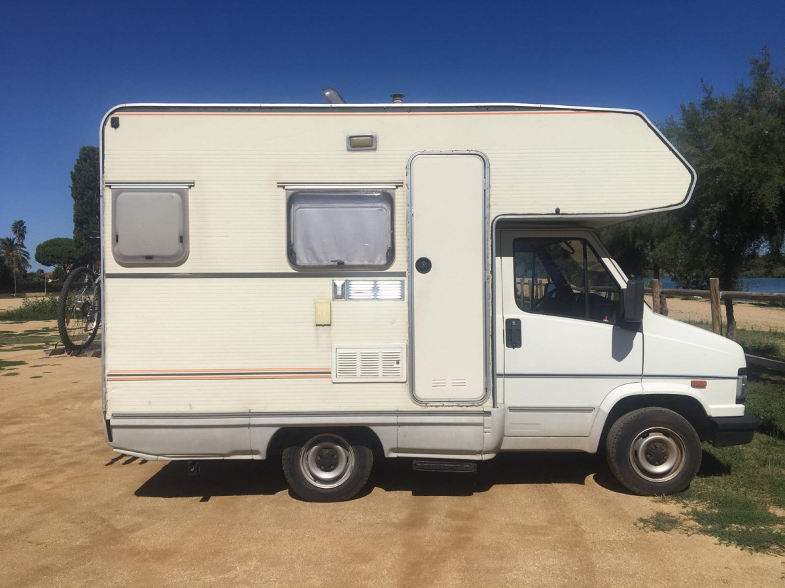
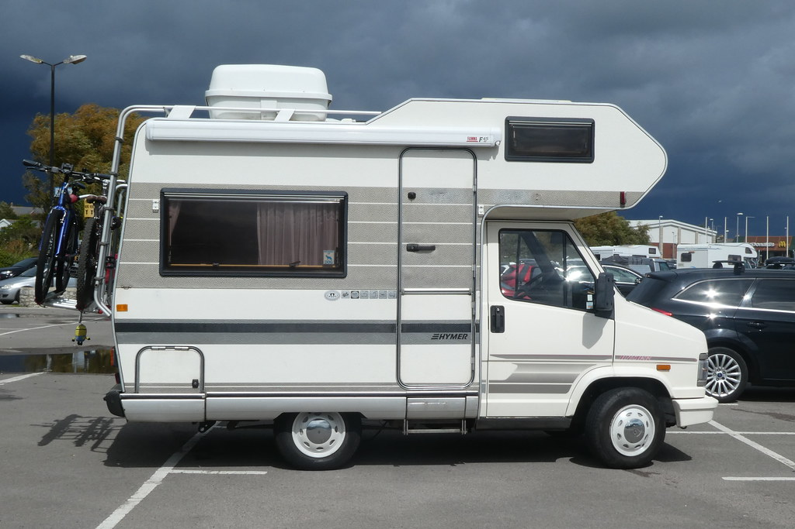

this is a list of funnily proportioned cars :v
maybe i love them bc i loved car town the facebook (and tuenti) game back in the day LOL. i even made a video with my cars in it lol
i really like this van. compare its cute proportions with this long transit camper
i really like SWB defenders, they're cute, very equal aspect ratio. i like jimnys as well
The Kangoo compact is really cute. the bebop is the civilian version, i love it
 compare with a regular kangoo W_W
love this one, cutest sedan ever probably, the proportions are just so funny
check out Friend Shaped Car on twitter for some more examples, altho they don't post often
From the 90s, i use 1992 as a query usually idk why. the proportions of them are crazy lolol, the campers especially, such a short front overhang and wheelbase but then quite a bit of overhang in the rear, plus, they're so tall and so short
 


